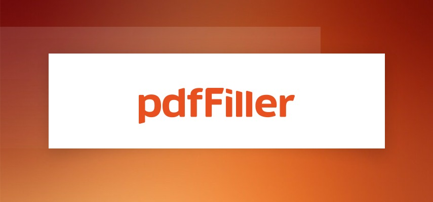

Top E-Signature Software For 2025
James McGill | Updated on January 18th 2025Privacy and Technology Consultant In a hurry? Here’s the top E-Signature Software for 2025:
In today’s fast-paced digital world, the convenience of electronic signatures (e-signatures) has transformed how businesses and individuals handle agreements, contracts, and paperwork. Long gone are the days of printing, signing, scanning, and mailing documents—a process that feels almost archaic in a world dominated by smartphones, cloud storage, and instant communication.
Whether you're an entrepreneur, a freelancer, or a corporate professional, e-signature software is becoming an essential tool for closing deals, onboarding employees, and managing important paperwork without ever touching a pen or paper. However, not all e-signature tools are created equal.
When selecting e-signature software, think about what will work best for you and your team. Is it easy to use? Can it integrate seamlessly with the tools you already rely on? Does it include a mobile app—especially important if your business involves customer-facing interactions? You’ll also want to make sure it supports the specific needs of your business, whether it’s signing contracts or simplifying workflows.
Ready to find the perfect fit? Let’s take a closer look at the top three e-signature software solutions for 2025.
An overview of the best E-Signature Apps for 2025:
- 🥇 1. SignNow — Sign documents online, generate agreements, negotiate contracts, and accept payments effortlessly. Collect signatures up to 10x faster with industry-leading compliance and sign anytime, anywhere, on any device.
- 🥈 2. Dochub — Upload your file and eSign PDF documents in just a few clicks with DocHub. Transform your documents online effortlessly using its advanced editing tools.
- 🥉 3. Pdffiller — Create legally binding electronic signatures and add them to contracts, agreements, PDF forms, and more from anywhere. Easily collect and track signatures on any device.
- Frequently Asked Questions about E-Signature Apps (FAQ).
Still unsure? Let’s dive into how these tools are transforming the way you work.
- Convenience at Your Fingertips: With e-signature software, you can sign or request signatures anytime, anywhere. Whether you're finalizing a deal from your office, signing an NDA on your smartphone while traveling, or onboarding a new hire remotely, these tools make the process effortless. Most platforms are available as mobile apps, ensuring you’re never tied to a desktop.
- Enhanced Efficiency: Gone are the days of waiting for physical documents to be signed and returned. E-signature solutions allow instant delivery, signing, and tracking of documents, drastically reducing turnaround times. With automated reminders, you can ensure no agreement slips through the cracks.
- Cost-Effective: Think of the costs saved by eliminating printing, postage, and storage of physical documents. Many e-signature platforms also offer affordable subscription models, making them accessible for businesses of all sizes. For small businesses and freelancers, free versions with essential features can often suffice.
- Security You Can Trust: E-signature platforms employ robust encryption and authentication measures, ensuring the security and legality of your documents. Features like audit trails, password-protected access, and compliance with global e-signature regulations (like the ESIGN Act and GDPR) give peace of mind to both senders and signers.
- Seamless Integration: Most e-signature tools integrate effortlessly with popular platforms like Google Workspace, Microsoft 365, Salesforce, and Dropbox. This connectivity means you can manage your workflow without switching between multiple applications, saving time and increasing productivity.
- Eco-Friendly Solution: Adopting e-signature software also helps reduce your environmental footprint by eliminating the need for paper and ink. For companies looking to meet sustainability goals, e-signature tools are a small but impactful step toward greener operations.
- AI-Powered Features: Many e-signature solutions now incorporate artificial intelligence (AI) to improve usability and efficiency. For instance, AI can pre-fill forms, suggest signature placements, or even analyze contract terms for compliance, further simplifying the signing process.
- Scalability for All Users: Whether you’re handling one document a week or managing thousands of contracts monthly, e-signature tools scale with your needs. From freelancers to enterprises, these platforms offer flexible plans and robust features to cater to varying workloads.
- E-signature software is more than just a trend—it’s a necessity for modern workflows. With convenience, cost savings, and security at the forefront, these tools are essential for anyone looking to streamline their document management processes. If you’re still relying on traditional signatures, now’s the time to explore the benefits of going digital and discover how e-signature software can revolutionize the way you work in 2025 and beyond.
1. SignNow — Ideal for Any Business Size
Founded to streamline document workflows, SignNow has quickly become a top e-signature solution for businesses of all sizes. Renowned for its affordability and user-friendly interface, SignNow provides powerful tools to sign, send, and manage documents quickly and securely. Whether you're a small business or a large enterprise, its robust features make it easy to collaborate on contracts, agreements, and forms.
SignNow excels in flexibility and advanced functionality, offering seamless integration with popular platforms like Salesforce, Office 365, Google Workspace, and more. It allows teams to easily embed e-signatures into their existing workflows, significantly improving efficiency. Additional features like customizable templates, role-based document routing, and comprehensive audit trails ensure compliance while simplifying document management. The platform also provides an in-app editor, real-time notifications, and robust team management tools, which enhance collaboration and productivity. Plus, the mobile app allows users to sign and track documents from anywhere, further increasing accessibility.
SignNow is an ideal choice for businesses looking for an affordable, reliable, and feature-rich e-signature solution. With its powerful integrations, intuitive tools, and flexible pricing plans, it enhances productivity and streamlines document management. Try it with a free trial and discover how SignNow can transform your workflow.
Get SignNow - Sign Anytime, Anywhere!
2. Dochub — Best For Beginners
DocHub is an intuitive e-signature and document management solution designed to simplify workflows for individuals and teams. With its user-friendly interface, you can edit, sign, and share documents seamlessly online. Whether you're completing forms, adding legally binding eSignatures, or organizing files, DocHub’s powerful tools make the process effortless and efficient.
What distinguishes DocHub is its user-friendly design and powerful set of features that simplify document management, making it ideal for both individuals and teams. The platform offers PDF editing and annotation tools, allowing you to highlight, add comments, and make changes to documents with ease. You can also create and use templates, making document creation faster and more efficient. DocHub supports PDF forms, enabling you to fill out and send documents effortlessly. For team collaboration, DocHub offers a multi-signer workflow, streamlining the signing process for multiple parties. You can collaborate on documents in real time and share them easily across platforms, including Google Drive, Dropbox, and Gmail.
Security is a priority with DocHub, offering advanced security features to protect your documents and personal data. Its seamless integrations, mobile access, and organizational tools like custom folders and labels ensure that you can manage and sign documents from anywhere, on any device.
DocHub is a versatile and user-friendly e-signature platform that combines powerful editing tools, templates, collaboration features, and advanced security. Perfect for both individuals and businesses, it offers seamless integrations and mobile access, making it a reliable choice for managing and signing documents efficiently.
Get Dochub - Sign Anytime, Anywhere!
3. Pdffiller — Best For General Use

PDFFiller is the e-signature and document management platform you need to streamline your workflow, whether you're working solo or managing a team. With its robust features and intuitive design, it lets you easily edit, sign, and share documents. From creating forms to adding digital signatures and securely managing files, PDFFiller provides everything you need to get the job done quickly and efficiently.
What sets PDFFiller apart is how it prioritizes your experience with essential tools like document tracking and custom branding. With document tracking, you’ll always know the exact status of each document you’ve sent for signature, helping you manage multiple documents with ease. Plus, PDFFiller allows you to personalize documents with your company’s logo and colors for a polished, professional look. It also offers template creation, automated workflows, secure cloud storage, and integrations with Google Drive and Dropbox, making your document management process even smoother.
For your business, PDFFiller delivers a scalable solution with team management tools and audit trails, ensuring compliance and security for every document. With its mobile app, you can sign and manage documents from anywhere, giving you greater flexibility and control.
PDFFiller is a feature-packed e-signature solution that combines document tracking, custom branding, and seamless integrations, making document management and signing effortless. Perfect for both individuals and businesses, it boosts efficiency and collaboration with its user-friendly interface and powerful tools.
Get Pdffiller - Sign Anytime, Anywhere!
How We Evaluate and Test E-Signature Software
Our e-signature software recommendations are created by professionals with extensive experience using, testing, and reviewing software tools. We invest dozens of hours researching and hands-on testing each platform to ensure our evaluations are authentic and thorough.
E-signature software serves a vital role in modern business workflows, but the people deciding which app to use often aren't the ones interacting with it daily. While there are many options that can handle document signing, not all of them are user-friendly or efficient.
To make this list, e-signature apps had to be both intuitive and equipped with features that cater to small and medium-sized businesses. In our view, an excellent e-signature app must meet the following criteria:
- 1. Effortless Document Signing: At its core, an e-signature app must excel at adding electronic signatures to documents. The process should be simple, efficient, and adaptable to various workflows, supporting multiple document types and devices. Bonus points were awarded to apps with robust integration capabilities, such as compatibility with Google Workspace, Microsoft 365, or Zapier, enabling seamless incorporation into existing systems.
- 2. Easy Document Sharing for Signatures: A great e-signature app doesn't just let you sign—it makes it easy to request signatures from others. This process should be smooth and enjoyable for recipients, without requiring them to create an account or download extra software. Apps were also judged on how closely they replicated the simplicity of signing a physical document.
- 3. Accessibility for Small and Medium-Sized Businesses: We prioritized tools designed for smaller-scale operations rather than enterprise-level apps with steep costs, contract lock-ins, or unnecessary complexity. Apps on this list are perfect for users who need to onboard a few dozen employees or manage contracts for a manageable client base, rather than those overseeing multinational operations.
- 4. Strong Security Measures: Handling sensitive documents like contracts demands robust security. Apps had to demonstrate encryption, compliance with global standards (e.g., ESIGN Act, GDPR), and features like password protection. While specific security needs vary by industry, the apps selected had to address general concerns.
- 5. Free Trials or Free Plans With so many competitors in the e-signature space, it’s hard to differentiate quality based on websites alone. Apps offering free trials or free plans were favored, especially those that didn’t require credit card information upfront.
Best E-Signature Software - Frequently Asked Questions
🖥 What is an electronic signature?
An electronic signature is a digital version of your signature, created using a computer, smartphone, or other electronic device. You can type your name, sign with a stylus on a touchscreen, or even draw your signature with a mouse or trackpad—it all counts as a valid signature.
🗒 Are electronic signatures legally binding?
Yes, electronic signatures are legally binding in most cases. However, because they’re easier to replicate than physical signatures, you may want to collect additional verification information if you anticipate needing to enforce the signature in court.
🖌 How do electronic signatures work?
Electronic signatures utilize cryptographic technology to verify the authenticity and integrity of digital documents. When you electronically sign a document, the e-signature solution captures your signature along with other relevant metadata and encrypts it. This encrypted data is securely attached to the document, ensuring that any subsequent changes to the file will be detected.
📚 Can electronic signatures be notarized?
Yes, electronic signatures can be notarized. The specific requirements for notarization vary depending on your location, so it’s a good idea to check the local regulations in your jurisdiction.
🔐 Are electronic signatures secure?
Yes, electronic signatures are secure. They employ encryption and authentication measures to ensure the integrity and confidentiality of signed documents.
💼 What types of documents can be signed electronically?
Most common types of business agreements can be signed electronically, including sales contracts, nondisclosure agreements (NDAs), real estate purchase agreements, purchase orders, and vendor agreements.
📥 Do signers need to install special software to sign documents?
No, signers do not need to install any special software to sign documents sent via e-signature applications. The signing process is handled within the application's environment, and signers can access it from various devices, including desktops, mobile phones, or tablets.
💰 How much do e-signature solutions cost?
The cost of implementing e-signature solutions varies depending on the provider and the scale of your organization's needs. Some e-signature providers offer subscription-based pricing plans, while others charge per document or user. Evaluating your requirements and comparing different providers is advisable to find the most suitable and cost-effective solution.
Transparency and Trust: The aim of this website is to help you find the perfect software for your needs in an easy-to-view comparison list. You can read more about how we review and about our background in the About Us section of this website. Software.fish does not feature all of the software available in the market, we cherry-pick what we consider to be the leaders in each vertical. We try to keep this site updated and fresh, but cannot guarantee the accuracy of the information as well as the prices featured at all times. All prices quoted on this site are based on USD so there could be slight discrepancies due to currency fluctuations. Although the site is free to use, we do earn commissions from the software companies that we have partnered with. If you click on one of our links and then make a purchase, we will get paid by that company. This has an impact on the ranking, score, and order in which the software is presented in our list and elsewhere throughout the site. Software listings on this page DO NOT imply endorsement.